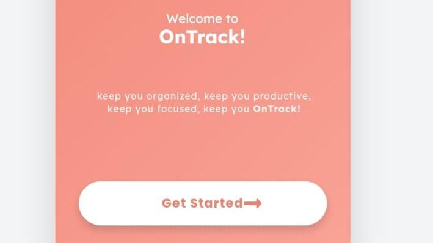
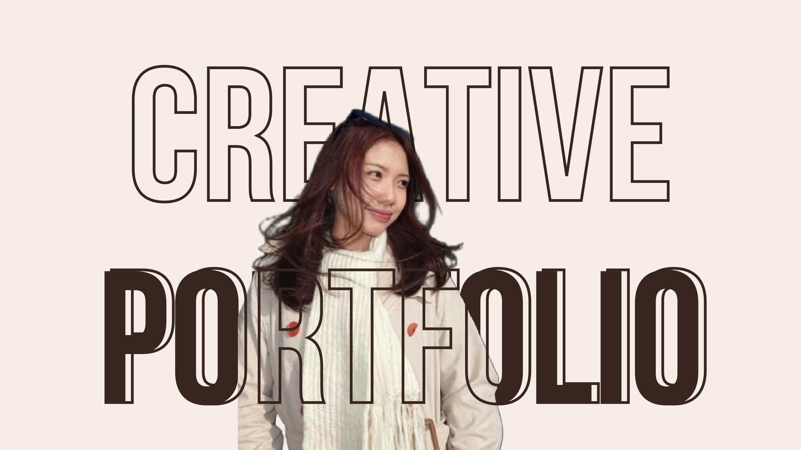
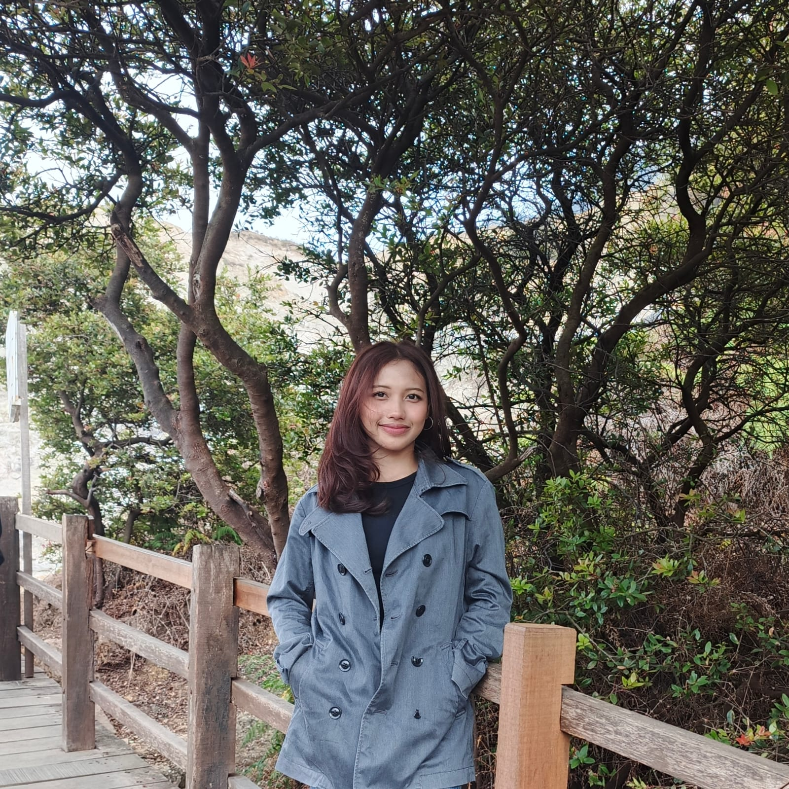
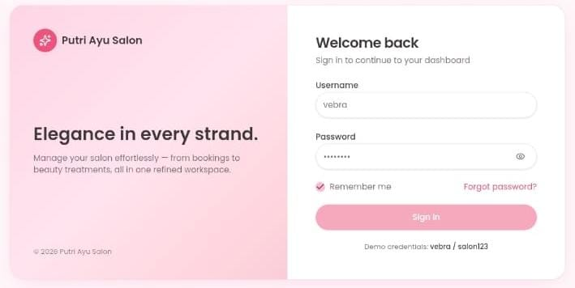
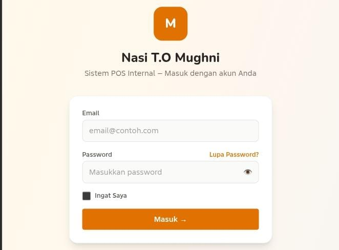
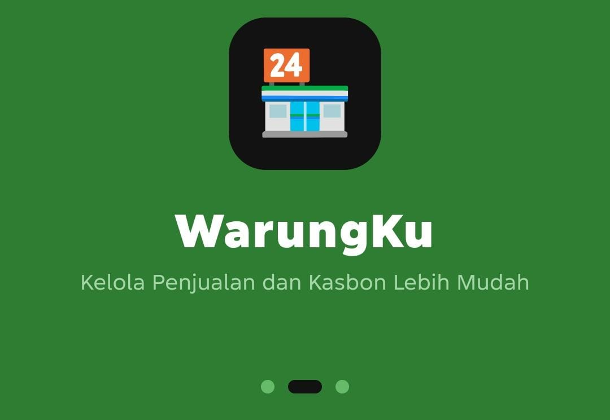

OnTrack!
Konsep aplikasi mobile pengelola tugas, jadwal, timer, dan statistik produktivitas.
Lihat Proyek ↗HELLO, WELCOME TO MY SPACE
Saya tertarik pada desain antarmuka, pengembangan website, dan teknologi informasi. Saya senang mempelajari hal baru dan merancang solusi digital yang sederhana, rapi, serta bermanfaat.

A LITTLE INTRODUCTION
Halo! Saya Putri, mahasiswa Program Studi Teknik Informatika di Universitas Perjuangan. Saya memiliki minat pada UI/UX, desain website, dan sistem informasi. Saat ini saya terus mengasah kemampuan melalui tugas perkuliahan dan proyek kecil.

WHAT I'M LEARNING
SELECTED CLASS PROJECTS

Konsep aplikasi mobile pengelola tugas, jadwal, timer, dan statistik produktivitas.
Lihat Proyek ↗

Rancangan sistem point of sale untuk pencatatan transaksi penjualan.
Lihat Proyek ↗